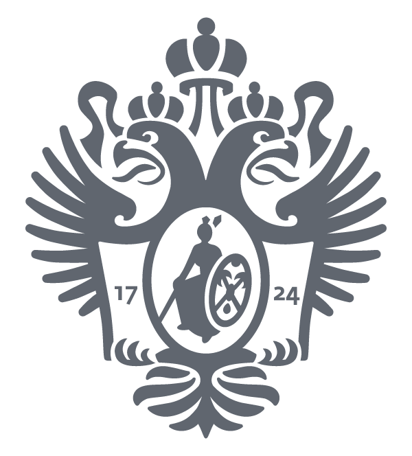
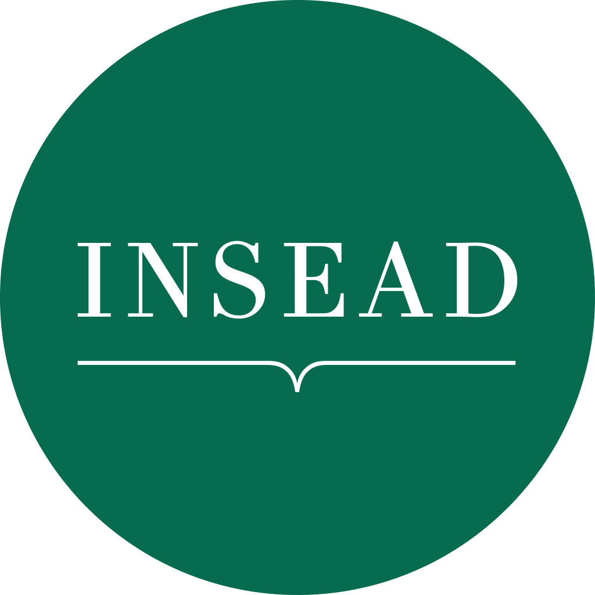

Looking for position or project in general/crisis management, business development.
Multi-industry experience in small, medium and large businesses, strong finance and economics background, success stories in business development, operational and finance management. Strong analytical and communication skills. Western education and modern management style.
|  | 1994 – 1999 St. Petersburg State University diploma in Economic Theory |
 | 2004 - 2005 INSEAD, France, MBA |
| 2000 - 2001 IMISP, St. Petersburg Finance management, graduated with honors |
2017 University of Toronto, course certificate ‘Behavioral Economics in Action’ |
Self-Employed Business Owner and Strategy Consultant at Hyperum – strategic sessions, strategic analysis and training support for various projects with customers including Gazprom, Sberbank, NLMK, Sibur, Mail.ru Group, and others.
Educational projects – teaching negotiations, management decision making, finance and economics for corporate clients and institutions.
Managed club’s youth football academy – ages from 6 to main youth team and 2nd team. Supervision of coaches, medical and administrative staff; coordination of day-to-day life of Academy as well as strategic development, international cooperation, research and implementation of scientific methods and innovative technology in education and training process. Reporting to CEO and head of the Board.
reporting to the board of the Joint Venture of Rosneft, Gazpromneft and Tomsk regional administration.
Achievements: raised club into Premier League; cleared club’s balance sheet from prior negative heritage; improved club’s infrastructure – new 2nd team stadium, online ticket sales, information and security systems; implemented modern business practices and processes in decision making, corporate governance, finance, and operations; achieved costs optimization and effective budget execution.
Premium new and used cars sales and aftersales, marketing, financial services. 150 employees, annual revenue of over 70m USD.
Achievements
Main functions and goals
Main functions and achievements
Was responsible for internal control in Ford of Russia, which included manufacturing plant in Vsevolozhsk, marketing and distribution operations in Moscow for Ford, Volvo, Land Rover brands. Dealt with the following processes and requirements: ISO9001, 14001, SOX2002.
Financial planning, management accounting, implementation ISO9001 and change management, treasury management, project financing, working with banks, etc.
Various positions in finance function – from junior economist to depute CFO role.
Russian – native. English – fluent, Chinese (Mandarin), French and Spanish – basic knowledge